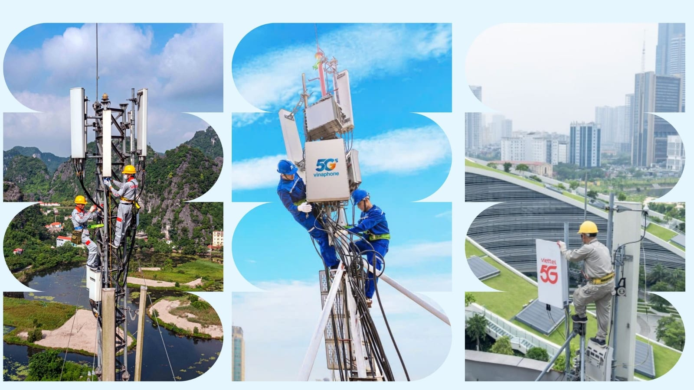
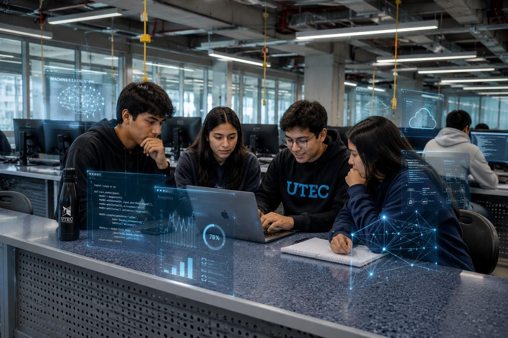
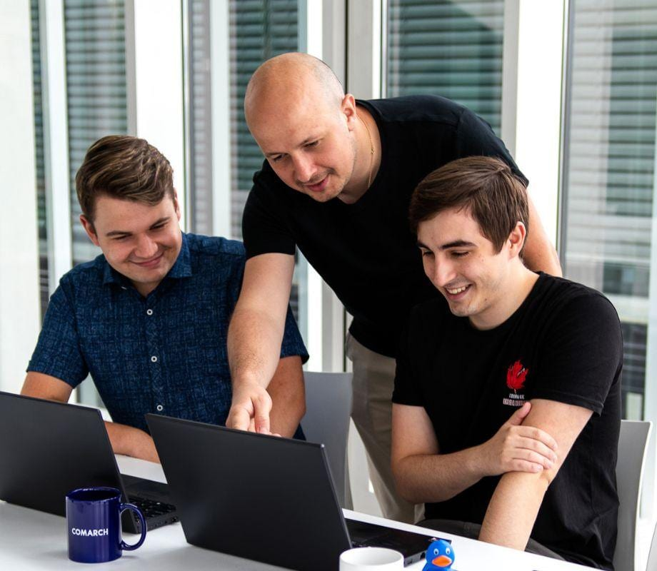
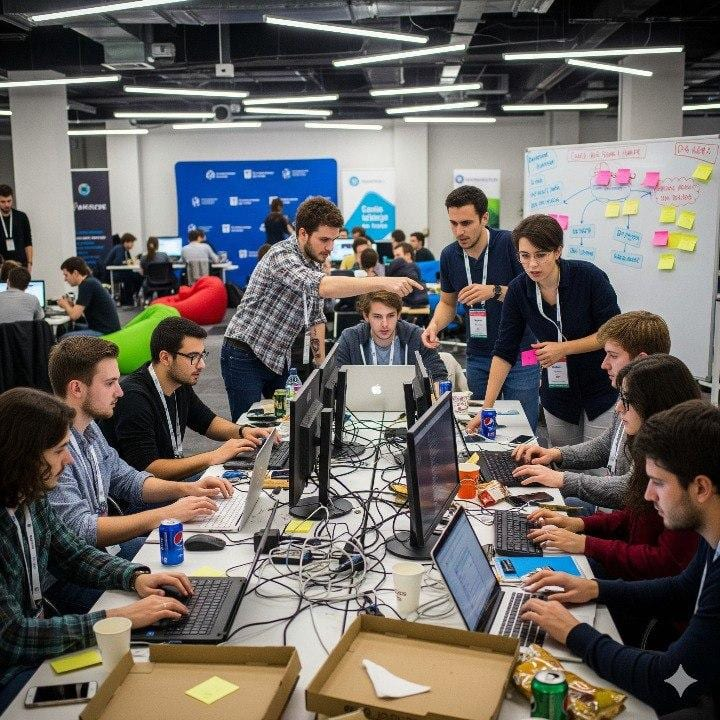

Cơ hội việc làm & năng lực cần có của sinh viên CNTT
> Việc làm · Cơ hội & thách thức · Năng lực · Đề xuất
Ngành này còn việc không?
Cần gì ở người mới?
- viết code lặp lại+ hiểu bài toán+ thiết kế+ kiểm chứng
Bức tranh việc làm
Cơ hội & thách thức
Kiến thức & kỹ năng
Vai trò các bên
Đề xuất
Kết luận
SV CNTT PTIT có việc (2024) [1]
mỗi năm, 2020–2025 [2]
…nhưng gồm cả làm trái ngành
Lương tăng theo kinh nghiệm, không theo tấm bằng
điểm tại UET
điểm tại PTIT Hà Nội
Sức hút của ngành không còn như trước
Meta · 05/2026 [5]
người bị cắt · 7.000+ chuyển sang AI
Microsoft · 05/2025 [6]
vị trí · ở Washington, >40% là kỹ sư phần mềm
tuyển fresher ở big tech Mỹ [7]
tuyển fresher ở startup Mỹ [7]
ứng viên / 1 tin thực tập ở Hà Nội [9]
So với 2019
Việt Nam: ít tin cho người mới, nhiều đơn hơn mỗi tin [8]
Ưu tiên người đã có kinh nghiệm [7]
Middle/senior tăng: hệ thống, bảo mật [8]
Dữ liệu & AI
An toàn thông tin
Cloud & DevOps
DevSecOps
vị trí front-end [7]
tin IT trên ITviec, Q2/2025 [10]
AI & an ninh mạng tăng nhanh nhất [11]
1930–1960
NASA thuê người tính tay
Máy tính điện tử ra đời
Họ chuyển sang lập trình [12]
Hôm nay · AI
Người: hiểu, thiết kế, kiểm chứng

Số hóa khắp nơi
Ngành nào cũng cần sản phẩm số
AI giúp học nhanh
Nhóm nhỏ cũng làm được sản phẩm thật
Tiếng Anh mở cửa
Tài liệu gốc, mã nguồn mở, nhóm quốc tế
Dự án mẫu mất giá trị
AI làm trong vài phút — cần bài toán thật
Cạnh tranh toàn cầu
Làm từ xa = đấu với ứng viên nước ngoài
Lớp học chậm hơn thị trường
Yêu cầu tuyển dụng đổi liên tục
Lệ thuộc AI
Nộp mã không hiểu, nền tảng rỗng
Nền tảng chuyên môn
Giải thuật, mạng, HĐH, CSDL — để biết khi AI sai
Kỹ năng làm việc
Git, API, kiểm thử, triển khai; dùng AI có kiểm chứng
Kỹ năng con người
Tiếng Anh, làm nhóm, nhận góp ý
SINH VIÊN
Chủ động xây năng lực
NHÀ TRƯỜNG
Đưa bài toán thật vào lớp
DOANH NGHIỆP
Giữ thực tập có hướng dẫn
CƠ QUAN & CỘNG ĐỒNG
Minh bạch số liệu, kết nối
Chọn vị trí mục tiêu, đọc JD
Học sâu môn nền tảng, luyện giải thuật
Làm dự án nhóm có người dùng thật
Chuẩn bị thực tập năm ba
Hiểu rõ mọi thứ mình nộp — kể cả phần AI

Nhà trường
Dự án với “khách hàng” thật · chấm theo quá trình

Doanh nghiệp
Thực tập có mentor · ghi rõ năng lực tối thiểu

Cơ quan & cộng đồng
Số liệu việc làm minh bạch · hỗ trợ hackathon
Như “máy tính con người” ở NASA — người thích nghi sẽ có vai trò mới.
Học sâu nền tảng
Một dự án thật
Kiểm thử & sửa
[1]PTIT, Báo cáo tình hình việc làm của sinh viên tốt nghiệp năm 2024 (22/01/2026) — ptit.edu.vn
[2]Bộ KH&CN, PTIT định hướng trở thành Đại học trọng điểm về kỹ thuật và công nghệ (2025) — mst.gov.vn
[3]ITviec, Báo cáo Lương IT 2025–2026 — itviec.com/bao-cao
[4]UET, điểm chuẩn 2022 và 2026 — uet.edu.vn, tuyensinh.uet.vnu.edu.vn; PTIT — tuyensinh.ptit.edu.vn
[5]Yahoo Finance/Quartz, Meta layoffs 2026: 8,000 jobs cut in AI restructuring (20/05/2026)
[6]Bloomberg, Microsoft Layoffs Hit Software Engineers as Industry Touts AI Savings (14/05/2025); MarketBeat (03/06/2025)
[7]SignalFire, State of Tech Talent Report 2026 (06/2026) — signalfire.com
[8]TopDev, Vietnam IT Market Report 2024–2025, tr. 26 — topdev.vn
[9]WorldQuant, tin Software Engineer Intern tại Hà Nội — linkedin.com/jobs/view/4376546722
[10]ITviec, Thị trường tuyển dụng IT quý II/2025 — itviec.com/blog
[11]WEF, The Future of Jobs Report 2025 — weforum.org
[12]NASA, Langley's Computers, 1935–1970 — nasa.gov/history
> Hỏi & đáp